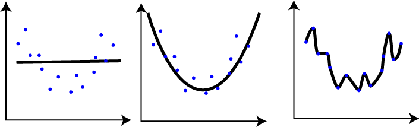
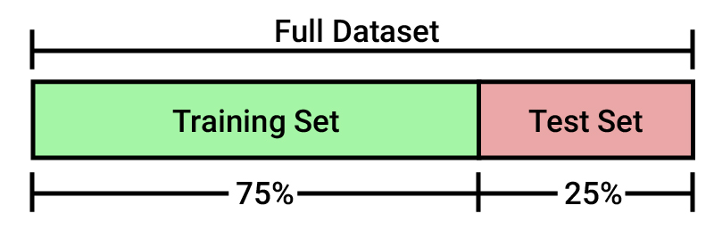
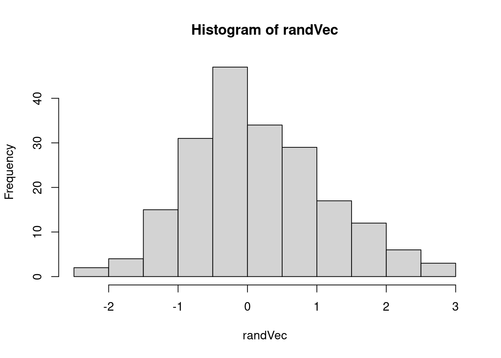
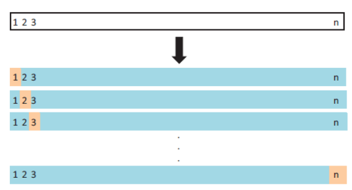

9.3 Cross Validation
A common danger in modeling is overfitting. Overfitting happens when we create a model that behaves perfectly with our data, predicting a large percentage of the dependent variable, but when generalizing it is not able to predict the data that come from reality. On the other hand, underfitting occurs when we create a model that does not fit our data (our sample of the population), and therefore will not fit properly to the reality. In none of the cases we can say that our model is generalizable.
To explain it in a less technical language, let’s give an example. Imagine that you would like to move to Japan, and therefore you have decided to study the language from home. Let’s put two suppositions.
Overfitting: You decide that you are going to see all the episodes of Dragon Ball to get an idea of the language before going to Japan. You repeat all the sagas of this series several times during a year, and once you know perfectly the language of the series you think you are ready to start your trip to Japan. You pack your bag and take the first flight, and when you arrive at Tokyo airport you have your first conversation with a Japanese person. You quickly realize that you don’t understand practically anything he’s saying to you, and every time you talk (thing like “Kamehamehaaa!!!” or “Yūgō!!”) he looks at you strangely, as if you weren’t speaking the right way. You have trained your mind very well with specific data that is not able to be generalized to other contexts and situations, so it is not useful for your purpose. This would be a case of Overfitting.
Underfitting: You decide that you are going to read some of the Japanese dictionary before you leave. You spend two days reading the dictionary and the third day you take a flight to Tokyo. Obviously, when you arrive at Tokyo airport and start talking to a Japanese person, you don’t understand anything he says to you and you can’t articulate a word. You have trained your mind badly with very poor data, so although the words you have studied are used in more general contexts, you are not able to reach your goal. This would be a case of Underfitting.

In the graphs we can identify, on the left, the underfitting model, and on the right the overfitting model. But how could we solve this problem?
Following the example, let’s imagine that we find a bar in our city where we can talk to Japanese people to practice our language. If we follow the first strategy, the first time we get there the same thing will happen, but we will realize about our mistakes in a controlled environment and we have time to return home and train with other situations. This is called Cross Validation. We divide our data into training sets and test sets to check that our model not only works correctly with the data I use to train it, but also with new data that has nothing to do with the training set.
To avoid the over and underfitting problems we will use cross validation techniques. In this section we will explain the four most important cross validation techniques. All of them can be summarized in the following steps:
- Reserve a small sample of the data set
- Build (or train) the model using the remaining part of the data set
- Test the effectiveness of the model on the the reserved sample of the data set. If the model works well on the test data set, then it’s good.
9.3.1 Train/Test split cross validation
Dividing a dataset into a training set and a testing set is a common and necessary operation when making a predictive model. It is important that we learn how to do this before we start creating any model. In general terms, an original dataset is usually divided into two sets: training and testing. Sometimes it is divided into a third subset called a validation set.
- Training dataset: This is the set with which we build the model. With this set we will calculate the parameters to obtain the equations that we will use later.
- Testing dataset: It is the set with which we check the effectiveness of our model. The equations and parameters of the original model are now used to calculate which is the output (Dependent Variable) based on the inputs of the testing set (Independent Variables). These outputs are used to compare the efficiency of the model, and see if it is really useful to predict or not the result.

Generally, the training set and the testing set are divided using a ratio of 75%(training)-25%(testing) or even 80%-20%.
There are many ways to divide data into two sections. The easiest way is to take the first 75%-80% for training and the rest for testing. However, this method can lead to problems because the first rows come from a different data source than the middle and end rows, or because they are ordered by time and so the time factor is important in the model. These situations can lead to the final result of the model being deviated from what it should have been.
The most effective way is to use a method to select rows randomly. Let’s look at different methods for dividing the dataset into training and testing sets.
Let’s start by reading the “Advertising” dataset. We will use four different ways to divide the original dataset into training and testing sets.
data = read.csv("./Data/Advertising.csv") # Read the data
dim(data) # Test the structure is well readed (3333 rows and 21 columns)## [1] 200 4- We are going to split the sample based on a random method, using the normal distribution. First we will create a vector of the same length as the number of cases in the dataset, but normally distributed.
randVec = rnorm(nrow(data))
hist(randVec)
- We use this new variable to randomly divide the cases. To do this we are going to create a new variable that we will call
checkthat will storeTRUEin the positions whererandVecis less than 0.8 andFALSEin the remaining positions.
check = randVec < 0.8
head(check,6)## [1] FALSE TRUE FALSE TRUE FALSE TRUE- Finally, we could define the
trainingset with those data that meet thecheckcondition and thetestset with those that do not.
training = data[check,]
test = data[!check,]
c(dim(training), dim(test))## [1] 149 4 51 4We can also do this by using the sample function in a simpler way than by generating a new random variable.
smp_size <- round(0.80 * nrow(data))
trainIndex <- sample(nrow(data), size = smp_size)
train <- data[trainIndex, ]
test <- data[-trainIndex, ]
c(dim(train), dim(test))## [1] 160 4 40 4Finally, we can use libraries like dplyr or caret to make it faster.
library(dplyr)
train <- sample_frac(data, 0.8)
trainIndex <- as.numeric(rownames(train))
test <- data[-trainIndex, ]
c(dim(train), dim(test))## [1] 160 4 40 4library(caret)
trainingSamples <- createDataPartition(data$Sales, p = 0.8, list = FALSE)
train <- data[trainingSamples, ]
test <- data[-trainingSamples, ]
c(dim(train), dim(test))## [1] 162 4 38 4This cross validation method, carried out in any of the four ways we have seen, is the most classic, and although it is still the most used, it is not the one that gives us the best results. Let’s look at two other methods that are a little more complex: Leave one out cross validation (LOOCV) and K-fold cross validation. Let’s see how each of them works and how to carry them out using the caret library.
9.3.2 Leave one out cross validation (LOOCV)
This method works as follow:
- Leave out one data point and build the model on the rest of the data set
- Test the model against the data point that is left out at step 1 and record the test error associated with the prediction
- Repeat the process for all data points
- Compute the overall prediction error by taking the average of all these test error estimates recorded at step 2

Let’s see how it works in R
# Define training control
trainControl <- trainControl(method = "LOOCV")
# Train the model
model <- train(Sales ~., data = data, method = "lm",
trControl = trainControl)
# Summarize the results
print(model)## Linear Regression
##
## 200 samples
## 3 predictor
##
## No pre-processing
## Resampling: Leave-One-Out Cross-Validation
## Summary of sample sizes: 199, 199, 199, 199, 199, 199, ...
## Resampling results:
##
## RMSE Rsquared MAE
## 1.716654 0.8912074 1.282867
##
## Tuning parameter 'intercept' was held constant at a value of TRUEThe advantage of the LOOCV method is that we make use all data points reducing potential bias. However, the process is repeated as many times as there are data points, resulting to a higher execution time when n is extremely large. Additionally, we test the model performance against one data point at each iteration. This might result to higher variation in the prediction error, if some data points are outliers.
9.3.3 K-fold cross validation
The k-fold cross-validation method evaluates the model performance on different subsets of the training data and then calculate the average prediction error rate. The algorithm is as follow:
- Randomly split the data set into k-subsets (or k-fold) (for example 5 subsets)
- Reserve one subset and train the model on all other subsets
- Test the model on the reserved subset and record the prediction error
- Repeat this process until each of the k subsets has served as the test set.
- Compute the average of the k recorded errors. This is called the cross-validation error serving as the performance metric for the model.
- K-fold cross-validation (CV) is a robust method for estimating the accuracy of a model.
The most obvious advantage of k-fold CV compared to LOOCV is computational. A less obvious but potentially more important advantage of k-fold CV is that it often gives more accurate estimates of the test error rate than does LOOCV. Typical question, is how to choose right value of k?
Lower value of K is more biased and hence undesirable. On the other hand, higher value of K is less biased, but can suffer from large variability. It is not hard to see that a smaller value of k (say k = 2) always takes us towards the train-test approach, whereas a higher value of k (say k = number of data points) leads us to LOOCV approach.
In practice, one typically performs k-fold cross-validation using k’s between 5 and 10, as these values have been shown empirically to yield test error rate estimates that suffer neither from excessively high bias nor from very high variance. The following example uses caret library to perform the 10-fold cross validation to estimate the prediction error.
# Define training control
trainControl <- trainControl(method = "cv", number = 10)
# Train the model
model <- train(Sales ~., data = data, method = "lm",
trControl = trainControl)
# Summarize the results
print(model)## Linear Regression
##
## 200 samples
## 3 predictor
##
## No pre-processing
## Resampling: Cross-Validated (10 fold)
## Summary of sample sizes: 180, 180, 179, 182, 180, 180, ...
## Resampling results:
##
## RMSE Rsquared MAE
## 1.676153 0.9014748 1.277113
##
## Tuning parameter 'intercept' was held constant at a value of TRUE9.3.4 Repeated K-fold cross validation
The process of splitting the data into k-folds can be repeated a number of times, this is called repeated k-fold cross validation. The final model error is taken as the mean error from the number of repeats. Is generally recommended to use the (repeated) k-fold cross-validation to estimate the prediction error rate. The following example uses 10-fold cross validation with 3 repeats:
# Define training control
trainControl <- trainControl(method = "repeatedcv",
number = 10, repeats = 3)
# Train the model
model <- train(Sales ~., data = data, method = "lm",
trControl = trainControl)
# Summarize the results
print(model)## Linear Regression
##
## 200 samples
## 3 predictor
##
## No pre-processing
## Resampling: Cross-Validated (10 fold, repeated 3 times)
## Summary of sample sizes: 181, 180, 180, 179, 180, 179, ...
## Resampling results:
##
## RMSE Rsquared MAE
## 1.686375 0.8973303 1.281722
##
## Tuning parameter 'intercept' was held constant at a value of TRUE